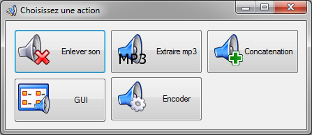
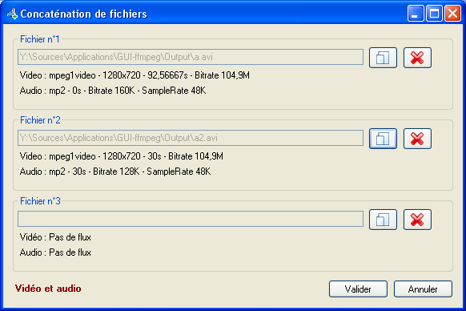
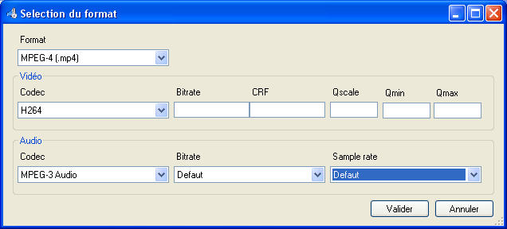
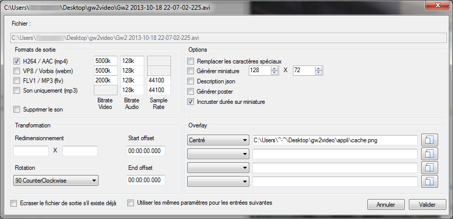

GUI ffmpeg
Présentation
Petit logiciel perso à tout faire, il permet de faire plusieurs
choses telle que la conversion entre différents formats de média, la
concaténation, réencodage, extraction de son, etc.
Il utilise à la base le logiciel ffmpeg qui est très réputé pour tout ce qui est
manipulation de vidéo/audio. Malheureusement, ffmpeg n'étant qu'en
ligne de commande il est assez repoussant, même si beaucoup
d'interfaces graphiques sont développées par des passionnés.
Voici les différentes fonction proposées actuellement par cette
interface.
Lancement
Lors du lancement de l'application cette fenêtre aparaitra

Pour utiliser une des 5 fonctions présentes, il vous suffit de cliquer
sur le boutton correspondant.
Vous pouvez également sélectionner vos fichier et les faire glisser sur
le boutton, cela lancera la fonction avec vous fichiers en question en
tant que source pour les opérations.
Suppression du son
Cette fonction sert à supprimer tout simplement le flux audio d'une de vos vidéo.
Ici le codec vidéo restera inchangé et l'entregistrement se fera dans
un nouveau fichier portant obligatoirement la même extension que la
source.
Extraction de mp3
Ici on récupèrera le son du fichier source qui sera réencodé au format mp3 de qualité CD.
Si la source est une vidéo, on ne gardera que le son. Si la source est
un fichier audio (ogg, wav ou autre) un simple réencodage sera effectué.
Si la source est un mp3, il sera quand même réencodé. Attention aux pertes de qualité dans ce cas.
Concaténation de média
Partie un peu plus compexe. Ici le but est de mettre bout à bout 2 ou 3 fichiers média.

Pour que cela soit possible il faut remplir plusieurs conditions :
- Les sources doivent être du même type, c'est à dire "audio + audio", "vidéo + vidéo" ou bien "audio/vidéo + audio/vidéo"
- Si de la vidéo doit être utilisée, la résolution doit être identique sinon ce n'est pas réalisable
- Le réencodage est obligatoire, les formats pourront être choisis une fois les fichiers définis
Le mode de concaténation utilisé (mentionné dans le 1.) est toujours défini par le 1er fichier.
Ce mode est indiqué en bas à gauche de la fenêtre dans le texte en rouge.
Les détails des différents médias sont indiqués en dessous de chaque fichier.
Si vous avez déplacé un fichier sur le boutton au choix de départ, le
1er fichier ne sera pas modifiable et servira de base définitive.
Une fois vos fichiers sélectionnés, validez et vous tomberez sur la fenêtre des formats/codecs.

Ici à vous de choisir 3 choses :
- Le format du conteneur (mp4, avi, webm, etc)
- Le codec vidéo (h264, vorbis, etc)
- Le codec audio (mp3, wav, etc)
A noter que que suivant si vous n'avez qu'une piste audio ou vidéo ou les deux, les choix seront différents et/ou grisés.
Attention : les paramètres à rentrer
ici influent énormément sur la qualité de sortie, surtout pour la
vidéo. Pour ne pas trop dégrader votre sortie vidéo référez vous au
bitrate indiqué pour les fichiers source dans la fenêtre précédente. Si
les champs ne sont pas remplis, la qualité sera celle par défaut de
ffmpeg, et donc très moyenne. Remplissez au moins le champ Bitrate pour
la vidéo, les autres paramètres sont réservés à une utilisation plus
précise.
Attention : Certains codecs ne sont
pas compatibles avec certains conteneurs. les plus classiques sont Mp4
(h264 + AAC), WebM (On2 VP8 + Vorbis) et Flv (Flv video + mp3).
Une fois validé, il ne reste plus qu'à enregistrer votre fichier de
sortie ... et à patienter car suivant les formats et les durées des
sources, vous pouvez en avoir pour un moment :)
GUI (interface graphique)
L'interface graphique sert à traiter des fichiers uniques ou par lot. Il est possible de :
- Redimensioner les vidéos
- Réencoder
- Appliquer une rotation
- Extraire des miniatures
- Appliquer des filigranes (images ou vidéo)
- Tronquer les vidéos
L'avantage ici est de pouvoir lancer le traitement de plusieurs fichiers sans avoir besoin d'intervenir une fois lancé
Pour ajouter des fichiers à traiter, soit vous les sélectionnez puis déplacer dans la liste en partie haute de la fenêtre, soit vous cliquez droit sur la liste puis Ajoutez via le menu contextuel qui aparait.
A ce moment là vous pourrez parametrer l'action à efectuer.

Format de sortie :
Ici on parametre les formats de réencodage. On retrouve les formats classiques uniquement pour le moment.
A savoir que si vous voulez travailler votre vidéo, il est obigatoire de choisir un format minimum, sinon rien ne sera effectué.
Transformation :
On peut indiquer une résolution de vidéo voulue largeur x hauteur. Si on ne rempli pas un des deux (ou -1 à la place), la dimension sera faite proportionnellement.
Le parametre de rotation s'effectue ici aussi.
On peut spécifier un temps de départ et de fin pour tronquer une vidéo. Laisser à 00:00:00.000 veut dire que ce n'est pas utilisé.
Options :
- Remplacer les caractères spéciaux : supprime certains caractères du nom des fichiers de sortie (utilisation personnelle)
- Générer miniature : créé un miniature correspondant au début de la vidéo et de la taille indiquée
- Description JSON : utilisation personnelle, ca ne vous servira à rien
- Générer poster : génère une image de taille identique à la vidéo pour la 1ère seconde
- Incruster durée sur miniature : assez explicite je trouve
Overlay :
Avec ces options vous pouvez ajouter des images ou même des vidéos par dessus la vidéo principale. Si votre image est un PNG avec transparence, elle sera conservée lors de l'application sur la vidéo.
Vous pouvez donc utiliser ces options pour mettre un cache sur les dialogues où bien incruster une autre vidéo un peu plus petite dans un coin.
Divers :
Si vous cochez la case "Ecraser le fichier de sortie ...", et bien vous devinez ! Par contre si elle n'est pas cochée, ffmpeg annulera la tache sans préavis.
Si vous cochez la case "Utiliser les mêmes parametres ...", tous les fichiers que vous avez glisser-déposer dans la fenêtre seront traités de la mâme manière que celui que vous configurez, mêmes overlays, mêmes encodages, etc.
Attention : Tous les fichiers réencodés seront de la forme _enc_ + [nom de l'original] + [extension]. L'extension dépendra du format de sortie.
Encoder
Réencodage simple d'un fichier
Conclusion
Ce logiciel est encore en développement, Merci de me raporter les bugs.